Cloud resources are backed by physical infrastructure that is often shared among multiple clients. AWS resources and data can be isolated by either restricting unauthorized access to them (authorization or access control) or by encoding sensitive information into a format that can be read only by its intended audience (encryption). In most cases, both are combined to secure user data, which is why encryption is an essential topic in cloud security. Ideas discussed in this chapter are not specific to microservices, but they will provide a general overview of security in the cloud. Later chapters will apply concepts covered here to different use cases that focus on microservices.
I have already introduced you to the CIA triad of information security impact. Encryption provides protection against a specific class of potential threats where malicious actors either want to read sensitive data (thus affecting the confidentiality of the data) or want to alter the content of this data (thus affecting the integrity of the data) without having the right access.
Users require a key to read encrypted data, even if they have already been authenticated and authorized.
Encryption can serve as a great fail secure mechanism in secure systems. When other threat-prevention controls such as authentication and authorization fail, encryption protects your sensitive data from being read or modified by unauthorized users who don’t have access to the encryption key.
To use security terminology, encryption protects your data by identifying its intended user using a knowledge factor (a specific attribute that only the intended recipient should be aware of). In this case, the encryption key is the knowledge factor. A cryptographic algorithm assumes that a key is known by only those who are permitted to read this data.
Here are definitions for some terms that I will use for the rest of the chapter:
In simple terms, Figure 3-1 shows the process of encryption and decryption.
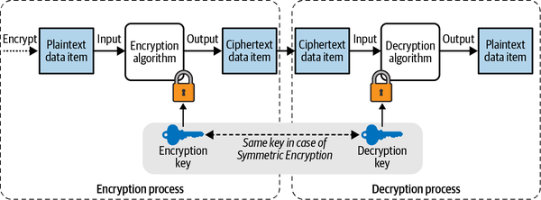
So to encrypt something you need two things:
If the same key that is used during the encryption process is used for decrypting the ciphertext, the encryption is called symmetric encryption. In this case, it is the responsibility of the encryptor to securely and separately transmit the key to the receiver. If a different key is used for decrypting the ciphertext, the encryption is called asymmetric encryption.
The short answer is the concept of defense in depth as I discussed in Chapter 1—multiple redundant defenses are better than a single all-powerful defense against potential threats.
As you already might be aware, nothing is physically isolated on the AWS environment. Your storage or computing resources are shared with other cloud customers. A cloud computing provider, by definition, assumes responsibility for protecting and isolating sensitive data for their customers. Although AWS provides its own guarantees with regard to the logical isolation of your data and services, it is always in your best interest to have additional layers of protection on the data you hand over to the cloud provider. Hence, locking your sensitive data (in the form of encryption) with a key that only you have access to will ensure that your data is protected logically from unauthorized access when it is handed over to AWS. In this way, our inability to physically control data access is compensated for by the logical isolation we gain from encryption.
Now that I have mentioned why encryption is so important on AWS, it can be quite easy to see why microservices take the need for encryption a step further. The basic value proposition behind microservices has been the modularity and the isolation they offer to your entire architecture. Instead of having one giant application where the data is shared by multiple identities, microservices encourage you to partition your application based on business domains. Security strategies like the zero trust network strategy draw their strength from your ability to modularize and isolate these modules. In physical environments, this would have been easy to achieve. Think of traditional data centers where you could have simply provisioned storage for different bounded contexts in different physical rooms within the data centers and possibly locked these rooms up with state-of-the-art security. On cloud environments, encryption is the best bet you have to make this isolation reliable. Encrypting different sources of data with different encryption keys gives you the same benefits that locked rooms provided in physical data centers.
Government organizations such as the National Institute of Standards and Technology (NIST) frequently standardize open source algorithms. Many regulatory bodies rely on the expertise of the NIST when it comes to formulating security policies. As a result, replacing existing cryptographic algorithms with their own (even if a newer algorithm may be more secure) is not a path AWS can take if it wants its clients to continue to maintain regulatory compliance. More importantly, writing your own cryptographic algorithm is never a good idea, in my opinion, even for companies as big as Amazon, since it can easily create security vulnerabilities. AWS does provide users with tools that support existing standardized cryptographic procedures. These tools make the process of encryption and all the activities surrounding the encryption process simple and secure. This includes the process of public key sharing, access control for the secret keys, key rotation, and key storage.
AWS supports both types of common encryption algorithms, symmetric as well as asymmetric, for most common use cases.
In a cryptosystem, the encrypted data is considered secure up to the point where a malicious actor is not aware of the decryption key. Therefore, the burden of protecting the data lies in securing the decryption key. If we are to assume that all the other information about the system is already public knowledge, knowledge of the key may be the only thing that stands in the way of an attacker getting their hands on sensitive data.
A good principle to keep in mind while designing a cryptosystem is Kerckhoffs’s principle: a cryptosystem should be secure even if everything about the design of the system, except the encryption key, is public knowledge. An analogy is that of physical locks. The fact that everyone has the same brand of lock as yours doesn’t mean they can open yours without the key.
Considering the key’s importance to the decryption process, securing access to it becomes an important aspect of maintaining data security. In addition, the ability to monitor access to this key is vital for detecting unusual activity. Also, periodically rotating a key will reduce the possibility that it decrypts sensitive data and causes security issues if it is leaked.
In a microservice application, across different contexts there may be hundreds of items to encrypt, all with separate encryption keys, creating an organizational nightmare. Security breaches, disgruntled employees, phishing software, and other security threats are harder to monitor or prevent if the complexity of the application is high.
Let’s say you need a centralized platform that holds the encryption keys for all of your microservices. This platform is highly available and accessible by each of your microservices.
Suppose you have two services, Service A and Service B, and AWS Key Management Service (KMS). Service A wants to send encrypted data to Service B. Service A can authenticate with the KMS. Once authenticated, Service A wants to ensure that the key used to encrypt and decrypt this information is only available to Service B. Once Service A encrypts data, it transmits it to Service B. Service B can now call the KMS to decrypt it.
Therefore, KMS acts as some sort of wrapper around the key to provide standardized authentication and access control. In this scenario, even if a third party were to gain access to this encrypted data, it could not decrypt it as long as your KMS ensures that the only two parties with access to this key are Service A and Service B. Figure 3-2 illustrates this flow.
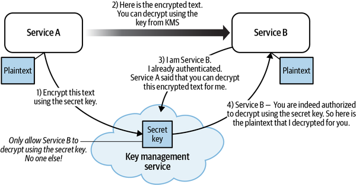
In the past, safeguarding the key involved the purchase of a hardware security module (HSM), which provided a fail secure way of keeping this key safe. The prohibitively high cost of acquiring an HSM meant most small organizations ended up thinking twice before making such an investment. However, through AWS KMS, organizations can avail the advantage of an HSM without the high capital investment. AWS KMS is the set of utilities AWS provides to safeguard this encryption key. AWS KMS is backed by an HSM that is maintained and secured for you by AWS as part of the AWS Shared Responsibility Model (SRM). With KMS, you can keep a log and an audit trail of all the actions performed with the key, whether it’s for encryption, decryption, or simple access. It enables you to pinpoint and record who has tried to access your data—intruder or otherwise.
You can use AWS KMS to encrypt data blobs of small sizes using the AES-256 encryption algorithm. KMS is a managed service that makes it easy for you to create, manage, and control customer master keys (CMKs).
With AWS KMS, you get the following:
A safe and durable place to store the CMK
Access control for the CMK
High availability for the CMK
If the size of the data to be encrypted is small (less than 4 KB), AWS KMS can be used to directly encrypt or decrypt it using the AES-256 algorithm. I will talk about how you can encrypt larger items in “Envelope Encryption”. Figure 3-3 shows the basic flow of encrypting a small payload using a CMK.
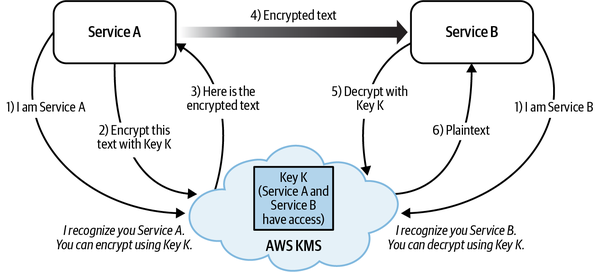
Payloads of size less than 4 KB can be encrypted this way. With larger payloads, envelope encryption can be used (don’t worry; more on that later). The process of securing the CMK is the same with either type of encryption.
Here are the steps, shown in Figure 3-3, for how AWS KMS makes the process I just described so elegant and smooth:
We can assume Service A and Service B have authenticated with our AWS setup. A CMK is created inside AWS KMS and access is granted to Service A and Service B.
Service A decides to encrypt the data it wants to send to Service B, so it makes an encryption request to AWS KMS.
KMS notices that Service A has already authenticated with an auth provider that it trusts and has access to Key K. Hence, it encrypts the data with K and responds with the encrypted text.
Service A transmits this encrypted text to Service B, which it receives.
Service B asks AWS KMS to decrypt the text.
KMS notices that Service B has already authenticated with an auth provider that it trusts and has access to K. Hence, it decrypts the data with K and responds with the plaintext.
If a third party—say, Service C—gets access to the encrypted data and tries to get the decryption key from AWS KMS, KMS will realize it has no access to the data and turn away any such unauthorized requests as part of Step 6.
Two important aspects of the encryption process that keep data safe are worth noting:
Whenever the CMK is secure from unauthorized access, sensitive data can be considered safe since an attacker will not be able to decrypt it unless the CMK is present.
If access to the CMK is granted to a service, the service will then be able to decrypt the encrypted text (also called ciphertext).
There was no communication of the plaintext key between the two services, but rather each of them had access to the same key in the cloud, which made our encryption process so strong. As part of the SRM, AWS guarantees high availability of the keys, so you don’t have to worry about the key server going down or your authentication process failing.
Basic encryption using KMS is restricted for very small chunks of data or for extremely basic situations where throughput and latency issues are not a problem. For almost anything else, envelope encryption is what will be used. Envelope encryption builds on top of the basic encryption services that KMS provides us, so I will introduce KMS first.
Whereas KMS has high availability, KMS has an account-wide throughput restriction that may be shared across all services within the same region and account. When you exceed the throughput limits, calls to KMS may be throttled, resulting in runtime exceptions in your application.
Behind the scenes, AWS uses an HSM that performs cryptographic functions and securely stores cryptographic keys that cannot be tampered with. AWS KMS generates and protects the master keys that you provide to the FIPS 140-2 validated HSMs. The responsibility of the security of these HSMs is assumed by AWS as part of the SRM.
Each CMK is created for a specific region. This means that if certain governmental regulations require you to hand over the CMK, you can continue to service other customers without violating any privacy requirements.
In envelope encryption, you break the encryption process into two stages:
In the first stage, you use a key called the data key to encrypt your large data objects.
In the second stage, you use your CMK to encrypt the data key and store this encrypted data key next to your ciphertext data while deleting the plaintext data key.
The application can then transmit the ciphertext data as well as the encrypted data key to the end recipient. Figure 3-4 shows how envelope encrypted ciphertext (encrypted data key and data-key-encrypted sensitive data) is protected from unauthorized access by properly protecting the CMK.
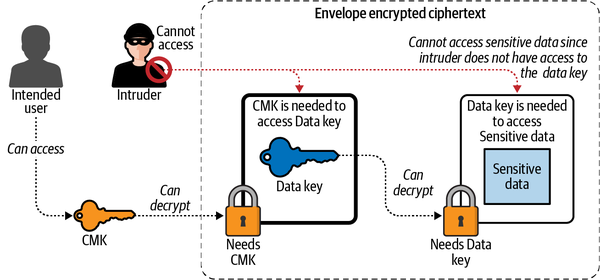
Envelope encryption is not a different type of encryption. It simply builds on top of basic encryption by adding an extra step of encrypting a data key and then using this data key to encrypt the plaintext data. The best practices for basic encryption are also applicable to envelope encryption, and almost every other aspect of encryption remains the same.
If the reading application has the master key to decrypt the encrypted data key, then all items can be decrypted within the same microservice, without having to make a call to a centralized key management server.
It is important to note that the only difference between the two is the output of the KMS decryption process. In basic encryption, you obtain plaintext sensitive data immediately after decrypting the encrypted payload. In contrast, when using envelope encryption, during the first step you obtain the plaintext data key, but the data is still encrypted. You have to use the plaintext data key to further decrypt the payload from the previous step. Apart from this added step, there are no differences from a security standpoint. In both cases, protecting the CMK protects data from being accessed. Figure 3-5 compares the two encryption methods.
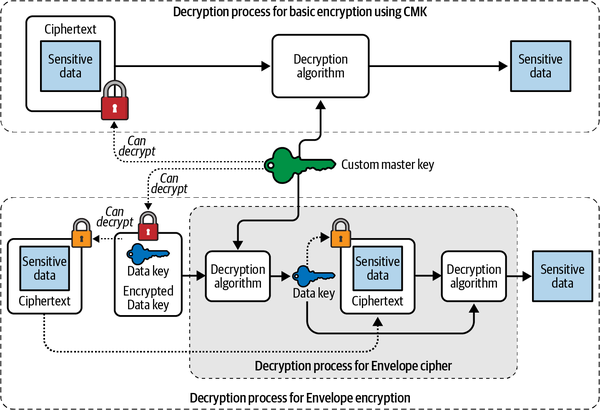
The two aspects of security that applied to basic encryption also apply to envelope encryption:
As long as the CMK is secured from unauthorized access, the sensitive data can be considered to be safe from unauthorized access, since an attacker will be unable to decrypt the encrypted data key, which is then required to decrypt the ciphertext.
If access to the CMK is granted to a service, the service will then be able to decrypt the encrypted ciphertext, since access to the CMK will allow the service to decrypt the encrypted data key, which can then be used to decode the ciphertext.
In basic encryption, you want to encrypt the table directly using the CMK. Given the 4 KB limit on using CMK, you will most likely make millions of calls to the CMK to either encrypt or decrypt each row in the table. The added latency due to encryption will thus rise significantly with each additional row because of the added step of calling KMS.
In contrast, envelope encryption requires you to first create a data encryption key (DEK), and then the entire table can be encrypted using this key. This key can be stored in memory by the encrypting application. Once the data encryption process is completed, the key can then be encrypted using a CMK, by calling the encrypt function on AWS KMS. While decrypting large amounts of data, a similar in-memory caching of the data key can result in significant efficiency gains.
Most importantly, since the data key can be cached in memory, the latency of the encryption step will not increase with the number of rows in the table. Figure 3-6 shows an example of how a cached data key can be used to decrypt multiple rows in a table.
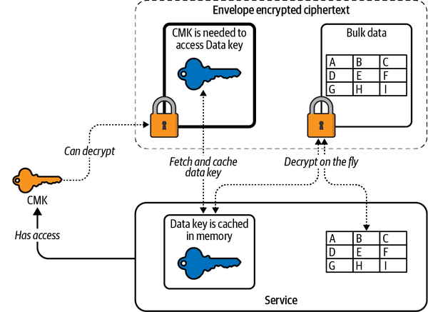
Let’s look at how envelope encryption behaves in the real world when communicating encrypted data between two services.
We’ll compare the end-to-end process of envelope encryption with the end-to-end process of basic encryption, as highlighted earlier in Figure 3-2. Since envelope encryption involves the added steps of encrypting and decrypting the data key, Figure 3-2 has to be slightly modified to reflect these changes. Figure 3-7 outlines how envelope encryption works in an end-to-end flow.
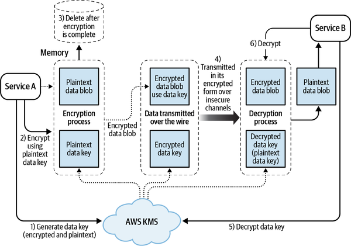
Here are the steps in the envelope encryption process:
Call KMS to generate a plaintext data key as well as a KMS encrypted version of this data key that is encrypted using the CMK. (This can be done in one call to KMS where KMS responds with both of these keys in its response.)
Encrypt the plaintext item with the plaintext data key from Step 1.
Delete the plaintext data key.
Send the encrypted data key and the encrypted data blob over the wire to the receiving service. (The plaintext data key or the data blob is never persisted and never leaves the sending service.)
In this way, only encrypted text traverses the insecure channel while the plaintext keys are deleted as soon as the encryption process is complete.
And here is the decryption process:
Take the ciphertext data key and use AWS KMS to produce a plaintext data key.
Use the plaintext data key in memory to decrypt the ciphertext blob.
By doing the encryption in this way, you control a few things:
Data can be stored independent of the key storage.
A leak of the encrypted data that is sent over the wire (encrypted data key + encrypted data blob) can still protect you from a leak of the data because the data is useless without the plaintext data key. And the plaintext data key cannot be retrieved unless the consuming service has access to the CMK.
Because the encrypted data is available locally, you can cache the plaintext data key in memory if you want to repeatedly encrypt or decrypt data, making the whole process fast.
Because the only thing that you use the CMK to encrypt is the data key, the size limitation of the KMS encryption process no longer applies to your encryption process.
You can create a data key using the AWS CLI with the generate-data-key command. Luckily, AWS understands the importance of this use case and provides a simple method of creating a data key using KMS:
aws kms generate-data-key \ --key-id <key-id> \ --key-spec <key spec for e.g. AES_256>
This command creates a data key that you can use to encrypt your data. The plaintext part of this response can be used to encrypt your plaintext data blob. You can then use tools such as OpenSSL to encode your data with the plaintext key and store or transmit this encrypted data. It also returns the ciphertext data key that you can save or transmit along with your encrypted blob.
Here is a sample response:
{
"CiphertextBlob": "<Base 64 encoded cipher-text data-key>",
"Plaintext": "<Plain text data-key>",
"KeyId": "arn:aws:kms:us-east-1:248285616257:key/
27d9aa85-f403-483e-9239-da01d5be4842"
}
This section covers how you can leverage KMS to protect data and information within your microservice architecture.
A common security mechanism generally used in encryption is called additional authenticated data (AAD). AAD is any nonsecret plaintext string that you pass to KMS as part of an encrypt or decrypt request.
For example, imagine an application that lets users maintain a private journal. In the case where a user needs to view a private entry, the application can use the username as the AAD to explicitly detect the user.
The AAD is used as an additional integrity and authenticity check on the encrypted data. Typically, the decryption process fails if the AAD provided to the decryption process does not match the AAD provided to the encryption process. AAD is bound to the encrypted data since it is used in decrypting the ciphertext, but this extra data is not included as part of the ciphertext.
A tuple describing a cryptographic context is supposed to contain a descriptor (a key) and a value for the descriptor. It is crucial that the context (the key and its value) used during encryption is reproducible during decryption.
AWS KMS cryptographic operations with symmetric CMKs accept an encryption context in the form of a key value pair, which functions as AAD for the purpose of supporting authenticated encryption.
The contextual information cannot be considered secret. It appears in plaintext within AWS CloudTrail logs so you can make use of it to recognize and categorize your cryptographic operations. This context can have any information as a key value pair, but because it is not secret, you should not use sensitive information as part of your context. Here is an example of how the encryption context can be set as a JavaScript Object Notation (JSON) string:
"encryptionContext": {
"username": "gauravraje"
}
The same username has to be passed during encryption and decryption.
As mentioned at the beginning of this chapter, the true power of encryption comes with the ability to control access to the CMK. And as you may have guessed, that means the ability to use resource-based policies on the CMK.
As discussed in Chapter 2, key policies can be classified as resource-based policies. The basic format of key policies is as follows:
{
"Sid": "Enable IAM User Permissions",
"Effect": "Allow",
"Principal": {"AWS": "arn:aws:iam::111122223333:root"},
"Action": "kms:*",
"Resource": "*"
}
A key policy applies only to the CMK it is attached to. Given that your CMKs are being used to protect your sensitive information, you should work to ensure that the corresponding key policies follow a model of least privilege.
If you do not explicitly specify a key policy at the time of creation, AWS will create a default key policy for you with one policy statement giving the root user full access to the CMK. You can grant more access by way of identity and access management (IAM) policies that are attached to individual users. However, if you add a policy either to this CMK or on the user attempting to access this key that says explicitly, “Deny,” then access will be denied. In other words, an explicit denial will always take priority over an allowance.
As you have noticed, the root account has to be given access separately to this CMK. It is not assumed that your root account automatically has access to the key. And taking access away from the key could make the key unusable. AWS requires you to create a support ticket in cases where the root account does not have access to the key.
There are many situations where you want even more granular access while accessing encryption keys. That is, you want certain external services to be able to encrypt or decrypt your data only in some very specific contexts.
The next sections briefly introduce two tools that AWS provides that enable us to achieve a granular level of access control, without compromising on security. You’ll then see examples of how these tools can be incorporated in your architecture design a little later in the chapter.
KMS grants are one way of enabling controlled and monitored access to KMS keys. I will elaborate on situations when such a use case is required, but for now we’ll assume there is a legitimate case like the following example.
You have a service—Service A—that has complete access to a particular KMS CMK—K. This service can encrypt or decrypt certain data using K. You also have Service B, which wants to perform these same operations. Instead of asking Service A to do this, your Service A wants to allow Service B the ability to access and use K (temporarily).
This is where KMS grants come in. A principal with a grant (in this case, Service B) can perform operations (encryption or decryption) on a CMK (K) when the conditions specified in the grant are met. Grants are applied per CMK and can extend beyond accounts if necessary (your services can give out grants to principals from other accounts). Grants can only allow access but not deny access. So if a principal already has access to the key, a grant is redundant and has no net effect on the security boundary of your keys. Principals can use grant permissions without specifying the grant, just as they would with a key policy or IAM policy. So after receiving a grant, it is as if the calling principal has access to this KMS key through its IAM or key policy.
It is important to note that AWS grants rely on the principle of eventual consistency. In other words, the creation or revocation of a grant on a KMS key may not take effect immediately—it may take a few seconds (usually less than five minutes) to take effect.
You can create a grant using the AWS Console tool by running the following:
aws kms create-grant \
--key-id <Key ID that you want to create a grant on> \
--grantee-principal <arn of the target principal recipient of the grant> \
--operations Decrypt
This command creates a grant that will allow the target principal to decrypt any items that were encrypted using the key that is specified using the Key ID.
You can also apply constraints to your grants so that you can have more granular permissions in your grants:
aws kms create-grant \
--key-id <Key ID that you want to create a grant on> \
--grantee-principal <arn of the target principal recipient of the grant> \
--operations Decrypt
--constraints EncryptionContextSubset={Department=IT}
This will ensure that your grant is given to the principal only as long as the condition related to the encryption context is met. This combination of encryption contexts and grants can further help you in assigning more granular permissions.
Similar to grants, the ViaService condition in key policy can be another tool in providing external services access to your key without compromising on your domain security infrastructure. Though grants are a good way of giving out temporary access to external services, there are times when this access needs to be permanent. I don’t mean you want to increase coupling between these contexts; you just want to have the ability to extend your encryption security boundary beyond your domain under very specific circumstances. When such circumstances are easy to define, you can use the key policy to formally codify such exceptions.
The kms:ViaService condition in a key policy constrains the use of a CMK to requests from specified AWS services.
Let’s look at an example of a ViaService condition where you will restrict the KMS operations to a specific principal as long as the call to use the keys comes from a lambda and not any other service:
{
"Effect": "Allow",
"Principal": {
"AWS": "<ARN of calling entity>"
},
"Action": [
"kms:*"
],
"Resource": "*",
"Condition": {
"StringEquals": {
"kms:ViaService": [
"lambda.us-west-2.amazonaws.com"
]
}
}
}
It is worth noting that the ViaService condition can also be used to deny permission to your keys just as it can to allow:
{
"Effect": "Deny",
"Principal": {
"AWS": "<ARN of calling entity>"
},
"Action": [
"kms:*"
],
"Resource": "*",
"Condition": {
"StringNotEquals": {
"kms:ViaService": [
"lambda.us-west-2.amazonaws.com"
]
}
}
}
This statement will ensure that any service that is not a lambda function will not be able to access your KMS resources for the principal mentioned in the policy. These two policies combined together will restrict KMS access for the user to the lambda.
Until now, I have been referring to the key as one logical entity, but in reality, a CMK is made up of different parts:
For most use cases, Amazon creates the key material for you whenever you create a key and are offered a seamless use experience. However, knowing the material is stored separately from the rest of the metadata can be useful for some advanced use cases, especially related to compliance.
As mentioned previously, KMS generates and maintains the key material independently of the key. When you create a new CMK, KMS stores the key material and all related metadata inside an HSM. However, KMS also allows you to import your own key material into KMS. This can be useful for two reasons:
For regulatory reasons, organizations like to control the lifecycle of their keys, and importing key material enables this control.
KMS does not allow immediate deletion of keys as a way of safeguarding objects from accidental deletion. Importing key material, however, is a way of getting around this limitation.
Key material can be imported through the UI or the API.
There are several types of CMKs within AWS:
Along with key generation, key exposure is a big problem that almost all security systems face. Most security scientists agree that key rotation ensures that your keys are safe and protected from abuse. For example, some industry standards, such as Payment Card Industry Data Security Standard (PCI DSS), require regular key rotations.
AWS provides you the ability to rotate keys either manually or automatically. Key rotation just means changing the backing key material that is used in the encryption process. Whether the CMK’s backing material changes multiple times or not, it is still the same logical resource.
One way to change the cryptographic material for your CMKs is to create new CMKs and then change your applications or aliases to use the new CMKs.
AWS realizes how important this use case is for maintaining security and hence has made it easy to rotate keys. Customers have the ability to turn on automatic key rotation for an existing CMK.
A customer managed CMK is automatically refreshed every year with new cryptographic material when automatic key rotation is enabled. Additionally, AWS KMS retains older versions of the CMK’s cryptographic material (previous key versions) until you delete the CMK. AWS KMS does not delete any older cryptographic material until you delete the CMK.
This means that at any given point there may be multiple versions of backing materials of keys that are represented by a single logical resource—the CMK. When you use a CMK to encrypt, AWS KMS uses the latest version of the backing key. But when you use the CMK to decrypt, AWS KMS is smart enough to identify and use the backing key that was used to encrypt this data in the first place.
Automatic key material ensures that the rotated key continues to have the same IAM and key policies and ARN as its previous versions, thus making the key rotation process easier. This also makes sure your application can continue to run without needing any code changes or deployments. Furthermore, a scheduled key rotation process ensures that your administrators can focus on other parts of the architecture without having to worry about the key rotation, which is handled completely by AWS.
In contrast, automatic key rotation has no effect on the existing data encrypted by the CMK. Thus, it will not re-encrypt data protected by the CMK, and by extension won’t mitigate any damage done by a compromised data key.
KMS rotates AWS managed CMKs every 1,095 days with the exception of keys that are disabled or pending deletion. Customer-managed keys on the other hand can be optionally rotated every 365 days.
As mentioned, a new CMK can be created to replace a current one instead of enabling automatic key rotation, if more granular control over key rotation is desired. A new CMK has the same effect as changing the backing key in an existing CMK when the new CMK has different cryptographic material than the current CMK.
Of course, since the new CMK is a new logical resource, you have to change any references to this CMK. Hence, it is best to refer to a CMK by using an alias in your applications. When you want to switch to a different CMK, you can change the target of the alias without needing any application code level changes.
When decrypting data, KMS identifies the CMK that the data was encrypted with and uses the same one to decrypt it. AWS KMS can decrypt any data that was encrypted by either CMK as long as you have access to both the original and new CMKs. If you only have access to one of the CMKs, you won’t be able to decrypt the data.
Whereas most other resources don’t have a “Delete” section, CMKs deserve special attention. The reason is that, depending on the type of the CMK, outright deleting the CMK immediately may not be possible. Deleting a key deletes all its backing material and is an irreversible process. Deleting it also means any resource or data that was encrypted using this key is lost forever without any hopes of reviving it.
AWS understands the seriousness of deleting a CMK (and all its backing material). To protect us from ourselves, AWS provides a mandatory waiting period during which a scheduled CMK deletion can be overturned. You can set this scheduled waiting period from a minimum of 7 days up to a maximum of 30 days, during which the key can be revived. The default waiting period is 30 days. A CMK that is pending deletion cannot be used in any cryptographic operations and does not get automatically rotated.
The only exception to this waiting period rule is a CMK that has imported its key material. You can delete key material on demand. When you delete the key material, the CMK becomes unusable but can be restored by reimporting the material. In contrast, once you delete the CMK itself, it cannot be recovered.
KMS being a regional service is generally not a problem, but it’s important to remember in two unique situations that microservices face from time to time.
The first situation is where you have a globally replicated service that is backed by the KMS key. In such a service, global data replication may involve using the same key, and thus encryption may involve cross-region communication that may add to your billing.
The second situation is similar, where you may be required by regulatory agencies to ensure the geographic containment of your data. In such a situation, AWS will have to use a key from the same region of your geographic area. This is especially important if you have to send cryptographic material across multiple regions or even move your data from one region to the other.
If you move any encrypted data to a new region, you may want to consider re-encrypting this data blob in the new region with a new set of data keys and a completely different CMK that is provisioned in the target region. This is to avoid cross-region calls and be fully compliant with certain regulatory frameworks and data security requirements that may be location specific.
Although AWS KMS offers a great alternative to managing your own HSM, it does come with a few trade-offs that should be considered when designing a system that relies on it.
Costs associated with KMS can be divided into two parts. Users have to pay a flat fee for each CMK that is present on KMS. Additionally, there is a per-request charge associated with every request made to this CMK.
Actions associated with the CMK also have an account-wide throughput limit. At the time of writing this chapter, each account is restricted to 10,000 API calls per region per second. These calls include calls to encrypt, decrypt, create grants, or any other action associated with the CMK.
AWS KMS is designed so that no one, not even AWS employees, can retrieve your plaintext keys from the service. From a regulatory standpoint, AWS KMS is compliant with various compliance standards such as PCI-DSS Level 1, HIPAA, FIPS 140-2 Level 2, and so on. Companies interested in maintaining their current compliance levels should check with their regulator if using AWS KMS is permitted and compatible with their level of compliance. More compliance-related information can be found in AWS Artifact within the AWS Management Console. AWS manages the maintenance and uptime in AWS KMS.
AWS KMS firmware updates are controlled by a strong and very restrictive access control. Each access is heavily audited and controlled by independent auditors. Some customers, however, may not be satisfied with the idea of using a serverless, fully managed service for key storage without having much control over the underlying hardware. For those customers whose regulatory, compliance, or security policy does not allow the fact that AWS fully controls, manages, and shares the infrastructure that holds the keys, AWS offers a different solution in the form of AWS CloudHSM, which provides a more isolated key management setup. Additionally, CloudHSM can be deployed fully within your virtual private cloud (VPC).
Asymmetric encryption is probably one of the most fascinating aspects of modern-day cryptography and is a topic worthy of an entire book by itself. A good place to start is Bruce Schneier’s book, Applied Cryptography (Wiley). For our purposes, I only have room to summarize the essence of asymmetric encryption. In asymmetric encryption, instead of a single key, you have two keys (a public key and a private key) that are connected to each other with a unique bond:
On AWS, you can use asymmetric key encryption in two use cases:
Encryption and decryption
Digitally signing data
With asymmetric encryption you can encrypt plaintext using a public key and then decrypt the ciphertext using the corresponding private key. The advantage of such an approach is that if the data can be decrypted only using the private key, just about anyone can encrypt the data and be assured that only the intended recipient will be able to decrypt it, thus maintaining a secure channel of communication without having to exchange keys. AWS safely stores the private key for the recipient and maintains access control over it.
Figure 3-8 illustrates how asymmetric algorithms can be used by external services.
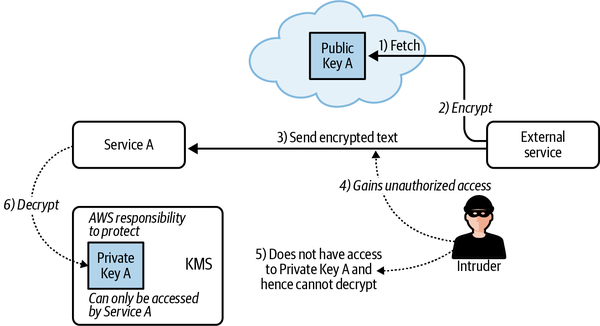
To send data using an asymmetric algorithm, the sender follows these steps:
Retrieve the recipient’s public key (which is public knowledge).
Encrypt the sensitive data using this public key.
Send this encrypted ciphertext to the intended recipient.
In this case, even if any intruder happens to gain access to the encrypted text, the intruder still will not be able to read the sensitive plaintext (the access control provided by AWS KMS will prevent the intruder from decrypting this text using the private Key A).
However, Service A will have access to private Key A and hence will be able to decrypt the text.
Because this data can only be decrypted using the private key, no “man-in-the-middle” attack is possible here. Furthermore, no keys are exchanged, so the recipient has close to no coupling (cross-module interdependence) with the sender.
Upon receiving the data, the recipient can decrypt it using their private key. In this way, sensitive keys never leave the intended recipient’s service.
It also works in reverse. Using asymmetric encryption, you can encrypt data using a private key and then decrypt using the public key. So if a recipient receives any data that is decryptable using the public key of a known entity, the recipient can be sure that the encryption process happened using the private key.
Figure 3-9 illustrates a situation where a microservice can use AWS KMS to digitally sign data that needs to be verified by other external services.
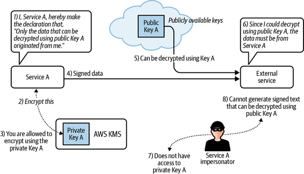
The process can be described using the following steps:
Service A makes its public key known to all external parties.
It then requests AWS KMS to digitally sign (encrypt using private Key A) the data that it needs to transmit.
AWS KMS identifies Service A (since they are both on AWS) and responds with encrypted data that is digitally signed using private Key A.
Service A then sends this data to any external service.
Public Key A can be used to decrypt this data sent in Step 4.
Since public Key A is able to decrypt this data, external services can be assured that it originated at Service A.
If any impersonator were to send data to the external service pretending to be Service A, it would not gain access to the private Key A, since it would not be able to identify itself as Service A to AWS KMS (due to any authentication control that you may have placed, as discussed in Chapter 2).
Since the intruder is not able to access private Key A, they are not able to encrypt data in a way that can be decrypted using public Key A. Hence, external services will not be able to trust any impersonator.
Figure 3-10 and 3-11 show how asymmetric keys work in the AWS Management Console.
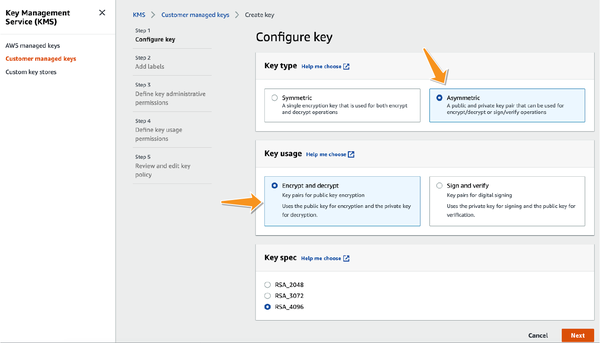
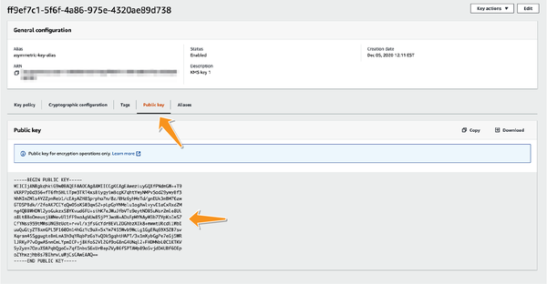
One of the most common classes of algorithms used for asymmetric encryption is the Rivest–Shamir–Adleman (RSA) algorithm. The asymmetric keys in AWS allow the use of many RSA algorithms from this family along with a growing list of other commonly used ciphers. These keys can be used for both of the use cases discussed here for secure transmission of data and for digital signing of data.
Now that you’ve seen how AWS KMS and envelope encryption work, let’s look at how you can modularize your encryption strategy to suit your domain design. There are some obvious design considerations in the context of encryption. Some typical advice includes the following:
Use envelope encryption wherever possible and use CMKs only to encrypt or decrypt data keys.
Do not reuse CMKs.
Restrict access to CMKs to a bare minimum so that only the services that are designed to talk to each other will have access to these keys.
Ensure that the data keys are not cached locally.
Use KMS contexts to add extra layers on top of your usual authentication.
Use IAM policies to restrict access to AWS keys using the principle of least privilege (PoLP).
These commonsense measures go a long way in avoiding potential breaches.
Unlike other systems in our application, sometimes (but not always) encryption mechanisms can be considered to be cross-cutting concerns, similar to logging and monitoring. This is where encryption is not the core of your service—far from it—but you still think that encryption should be present across various modules in various contexts. Furthermore, if this encryption transcends contextual boundaries, it means you cannot really modularize encryption based on your existing service boundaries.
For cross-context communication, it is really difficult to draw a service boundary because, by definition, you want to allow two different bounded contexts to understand and speak the language. Hence, where these CMKs should live (in which bounded context) is generally a question that most architects face while designing their cloud infrastructure.
Generally, it is a good idea to have different accounts for different domains in order to grant autonomy to your service contexts. Each of your domains can then use a CMK for each service, giving access only to its constituent services. This brings up the question of cross-domain communication, where you may require service from one context to send data or information to another service in another context and, hence, in this case, another account.
Luckily, AWS allows sharing of keys across accounts. You can grant trusted entities (IAM users or roles) in one AWS account permission to use a CMK in another AWS account.
As you might guess, these permissions are set using key policies. The CMK key policy must be set up to grant the external account permission to use the CMK. The key policy permissions in external accounts must be delegated to their users and roles by IAM policies in that account. In the words of AWS: “The key policy determines who can have access to the CMK. The IAM policy determines who does have access to the CMK. Neither the key policy nor the IAM policy alone is sufficient—you must change both.”
KMS, being a managed service, resides fully in a centralized cloud network. That creates a unique issue.
In order to perform their cryptographic functions, your individual services now need the capability to connect to AWS KMS. The risk of security issues increases because services which might not otherwise connect to the internet will need to do so.
The issues around network security can also be resolved using VPC endpoints. VPC endpoints are covered in detail in Chapter 5.
As promised, let’s return to talking about business use cases in domain-driven design (DDD) where KMS grants help you in providing better modularization to your services. Consider the following business problem.
Let’s say you are working on an internal organizational system that keeps track of all your employees’ benefits and compensation. You have two domains that communicate with each other in your application. One domain (and its constituent services) keeps track of the sensitive information related to employee salaries. As a responsible employer, you have done a good job in protecting employee salaries. Among other measures, you have used a strong encryption suite with the help of AWS KMS and restricted access to this key to only certain privileged services within this domain. The other domain is the reporting domain that generates a report of all of your employees. These services typically do not need access to privileged information about employee salaries. But in certain very specific situations, the service is required to aggregate sensitive information and hence has the need to decrypt the salary information.
Here what you are saying is, “No one should have access to this key except when they have to perform a certain very specific operation.” This is a textbook example of where grants work well with your domain design. A grant allows you to control access to your keys without having to open up the key to any external contexts on a temporary basis. These grants can be revoked as soon as the business use case is over, and in this way the access is controlled.
Bounded contexts within AWS generally follow business-level domains. On AWS, as I mentioned in Chapter 2, different domains may find it prudent to create separate accounts to maintain operational independence. Although most microservices may be classified based on the domains they belong to, services that rely on encryption may find it harder to get classified since encryption generally involves communication between contexts, and hence may span across AWS accounts. Luckily, as mentioned in “Accounts and Sharing CMK”, the CMK is not bound by any account-level boundaries, and services from different accounts can continue to use the CMK.
This brings us to the question of where exactly a CMK should live. There are two options, and each has its merits as well as demerits:
Once you have made a choice, you can use basic account-level controls such as IAM policies and resource-based policies to control access, as described in Chapter 2.
This option assumes that each bounded context has its own AWS account, and that each account and therefore each bounded context within your organization, has its own set of KMS keys. Since there is now a 1:1 relationship between AWS accounts and bounded contexts, it is easier to secure individual domains.
This still leaves the question of cross-domain communication and data sharing. As discussed, though, because KMS keys are not restricted by account-level constructs, in this particular topology you can leverage tools such as KMS grants to allow granular access to external services from accessing your cryptographic functions and keys. Figure 3-12 shows how you can have the CMK bundled with the rest of your services. For any cross-domain encryption or decryption, you can use KMS grants to allow temporary cross-domain access.
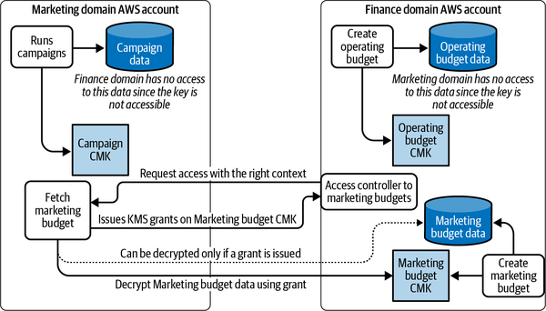
The key advantage of such a system is the ability to cleanly separate out domains. There is no centralized orchestrator for encryption in microservices.
The disadvantage of such a system is the added complexity involved in cross-context communication where a grant-based communication protocol not only generates added logic that may be harder to debug but also brings the latency associated with KMS grants.
A different approach to dividing your domains is to have a third account along with your existing two accounts that houses all of the infrastructure-related mechanisms. This is the account that will hold all the CMKs for all of your domains and services. As a result, all your encryption services will be granted access to these CMKs on a per-use-case, per-service basis, while the ultimate control of the encryption will still be maintained by a separate account where only users with higher access privilege will be allowed to make changes.
This cleanly separates the runtime operation of your microservices from the security-related infrastructure. This also ensures that if the root account on one of your domains is compromised, the encryption keys of that domain, and thus the data, can still be protected from intruders through the infrastructure account that holds the encryption keys. Using a new, purpose-built AWS account, your key administrators can collaborate and work from a secure, alternate infrastructure.
This infrastructure account can expose individual roles that can be used by “key admins” to perform admin-level tasks on these keys individually. So tasks such as changing IAM permission changes, key policy changes, and others can be restricted to these key admins without compromising the security of your CMKs.
Figure 3-13 shows such a structure where all the CMKs are kept outside of the business-level accounts, inside a third centralized account. The key policies of these CMKs can be used to grant granular access to domain-based services to perform tasks such as encryption and decryption.
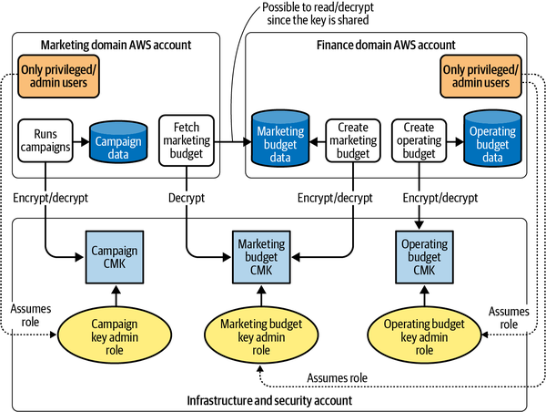
The clear advantage of this approach is the ability to move some of your security infrastructure out of your domain logic into an infrastructure account. This also allows more granular access to data without needing KMS grants or any of the complexity associated with it.
On the flip side, however, maintaining a common infrastructure account within large organizations can be a nightmare in itself, requiring coordination at the security levels. This can be especially problematic if your organization does not have a clear security protocol in place for how much access should be given to which entity. Imagine a situation where you have a common infrastructure account where everyone has root access. Or even worse, an infrastructure account where only one person has access, and the entire company shuts down after this person leaves their job (sadly, this happens way more often than I would like to see in the industry).
As mentioned, I am trying to be neutral about which choice works best and will let you decide what fits your use case. As long as you approach your architecture with careful thought and planning, both approaches have their advantages and disadvantages and can satisfy your requirements. I personally like the second option since, in my opinion, it is easier to harden and secure a centralized infrastructure account as opposed to encryption keys, which may be all over the place.
The problem of keeping secrets (passwords, credentials, or tokens) safe is an issue almost all companies have faced at some point. This problem is exacerbated by the presence of microservices. In a traditional monolith, where you had only a handful of applications, it was easy to store secrets in one location or, possibly, to just memorize all the secrets.
In a microservice architecture, the number of secrets is considerably higher. To ensure security, it is a good idea to also ensure that each microservice has independent access to any external service (shared or otherwise)—without any password reuse.
A very practical solution is to centralize the storage of all secrets. Storing them in one place and then providing certain access to a few sets of trusted administrators ensures efficient secret organization and control. This is a tempting policy, but it creates all-powerful administrators, which is not ideal.
Realizing this challenge, AWS introduced AWS Secrets Manager. Secrets Manager offers the illusion of a centralized repository but at the same time keeps it separated out and gives good access control over all the secrets. Secrets Manager also helps in rotating some of the passwords automatically for certain AWS-managed services. Secrets Manager has IAM control, which is completely independent of your running application, adding to the security since your secrets will still be protected even if someone gains control of your application.
AWS Secrets Manager is one example in which KMS can be used to provide security to the rest of your application. Secrets Manager transparently encrypts your secrets before storing them and decrypts them when you need them.
Figure 3-14 outlines a scenario where a microservice (Service 1) running on AWS using an AWS role wishes to access the password for a database (DB1).
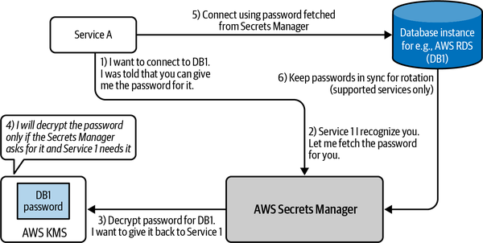
The process is as follows:
Service 1 makes a request to AWS Secrets Manager asking for the password.
Secrets Manager recognizes Service 1 (since they are both on AWS) and the role that it used to make such a request.
Secrets Manager has the password inside its storage, but it is encrypted. So it makes a request to AWS KMS to decrypt it.
AWS KMS is instructed to decrypt the password only if it is requested by Secrets Manager to be provided to Service 1. So no other service can gain access to the password.
Once this decrypted password from Step 4 is returned to Service 1, it can connect to DB1.
This way, no secrets are ever stored on the instance, and all the passwords can be implemented on the fly with absolutely no need to have any complex authenticated mechanism. AWS Secrets Manager also has the ability to rotate credentials to certain managed AWS services such as AWS Relational Database Service (RDS), AWS DocumentDB, and others, as shown in Step 6 in Figure 3-14.
To appreciate the elegance of this solution, let’s take a step back and see what you achieve by doing this:
You have a microservice application running an application.
You attached a role to your microservice so external entities can identify you with an AWS role. (This took care of authentication for you.)
You made calls to AWS Secrets Manager to fetch secrets for you. IAM policies and encryption here will handle access control for you.
You made calls to your database or any other external resource that required credentials-based authentication.
All this was achieved without you having to store a single credential on your application side in a true almost password-less manner. I say almost password-less because you still use passwords under the hood to achieve this. But all of the password use is transparent to your microservice. There is no need for the application to maintain separate config files for storing secrets or using third-party encryption services. You can also rotate passwords regularly, and your application never has to know what changed. Each time it makes a call to AWS Secrets Manager, it is guaranteed to get the latest credentials for logging into your resource, keeping your environment highly secure.
AWS Secrets Manager is fully compliant with many different regulatory standards. It is rare to see a more perfect alignment of security initiatives with those of operational efficiency.
This way, your microservice can focus on its business logic while the security aspect is controlled by AWS for you.
Every time you create or change the secret value in a secret, Secrets Manager uses the CMK that is associated with the secret to generate and encrypt a data key. Secrets Manager uses the plaintext data key to encrypt the secret value outside of AWS KMS, and then removes it from memory. The data key is encrypted and stored in the metadata of the secret.
The secret value is protected by the CMK, which remains encrypted by AWS KMS. A secret can only be decrypted by Secrets Manager if AWS KMS decrypts the encrypted data key. This is where the IAM permissions of your user can help in protecting your secrets. You can make use of all the concepts discussed in “Key Policies”, to ensure that the CMK has the most restrictive scope. This includes using the kms:ViaService condition on the keys to ensure that the decryption of the secret can only happen if the call is made from AWS Secrets Manager.
The IAM policy for the CMK can add a condition such as the following:
"Condition": {
"StringEquals": {
"kms:ViaService": "secretsmanager.us-east-1.amazonaws.com",
"kms:CallerAccount": "<account number>"
}
}
That ensures that least privilege is applied to this key and that its use is restricted to AWS Secrets Manager.
Apart from restricting access to the CMK, the Secrets Manager has its own resource policy that can be used to further restrict access. It is considered a best practice to restrict access on both the AWS Secrets Manager as well as its backing CMK.
This chapter laid the foundation for an understanding of encryption on the AWS cloud system. While being very conceptual, these concepts of encryption will inform many different resources that will be introduced in the next few chapters.
This chapter introduced both symmetric and asymmetric encryption. In symmetric encryption, you have a common shared secret key that the encryptor as well as the decryptor has to be aware of. The sharing and transmitting of this secret key can be done using KMS that, when coupled with proper authentication and authorization mechanisms, can provide you with a secure common cloud location from which your microservices can fetch the encryption key in a zero trust manner. This shared key is called the customer master key. The chapter then looked at a few ways to secure this CMK by adding additional layers of protection to ensure that the CMK will not be compromised.
Probably the most important takeaway from this chapter is to realize that the strength of the security of your application depends on the security protocols you put in place around your CMK. A compromised CMK does not protect anyone or anything, and hence most of the design around encryption revolves around ways to design the security of your CMK.
You also saw the limitations of KMS encryption using CMK and how the CMK should preferably be used in the context of envelope encryption. In envelope encryption, you can use the CMK to generate and encrypt a data key that is then used to encrypt the rest of your data. That way, you can go around the size limitation of CMK-based encryption.